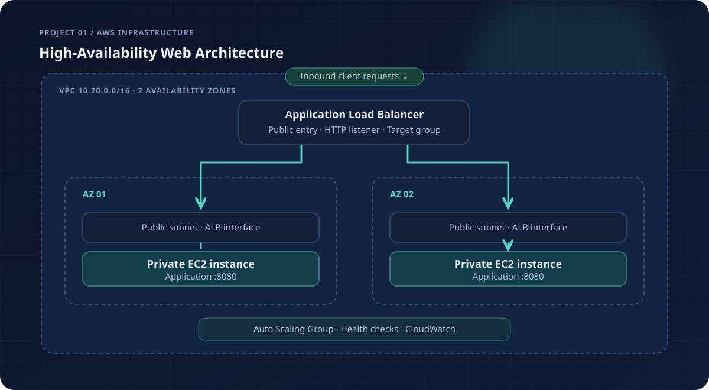

Highly available AWS infrastructure
A fault-aware web architecture using two AWS Availability Zones, private application instances, a public load balancer, Auto Scaling and Terraform.

SYSTEM ARCHITECTURE · CONCEPTUAL COMPONENT AND TRAFFIC FLOW
The challenge
A single web server is a fragile entry point. This project explores how to provide one public endpoint while distributing application compute across isolated private subnets and two Availability Zones.
The infrastructure is managed declaratively, making its network boundaries, scaling rules and health-check settings part of the versioned source code.
The architecture
Terraform provisions a VPC with two public and two private subnets. The Application Load Balancer is attached to the public subnets; EC2 instances in private subnets serve the application through an Auto Scaling Group.
Incoming HTTP requests flow through the load balancer to healthy application instances. A CloudWatch alarm watches the count of unhealthy ALB targets.
Engineering decisions
- Private application tier: instance security groups accept application traffic only from the load balancer.
- No unnecessary NAT Gateway: the sample app uses the Python runtime available on the AMI, avoiding outbound access for initial bootstrap.
- Health-based capacity: ELB health checks and Auto Scaling complement each other.
- Reference scope: the illustrative HTTP listener keeps the demo focused; a public production service would use HTTPS and an ACM certificate.
How the pieces fit together.
Isolate network tiers
Split subnets by purpose and Availability Zone. Route public traffic only through the ingress layer.
Route to healthy compute
Use an ALB target group to forward requests to private instances with health checks.
Adapt to demand
An Auto Scaling Group maintains the baseline of two instances and reacts to CPU demand.
Architecture, expressed in code.
The key implementation spans main.tf, variables.tf and a launch-template bootstrap script. Its Terraform configuration describes how private instances attach to the shared load balancer.
resource "aws_autoscaling_group" "app" {
min_size = 2
max_size = 3
health_check_type = "ELB"
target_group_arns = [aws_lb_target_group.web.arn]
vpc_zone_identifier = aws_subnet.private[*].id
}}Browse docs/architecture.svg for the full architecture diagram and .github/workflows/terraform-check.yml for automated format and validation rules.